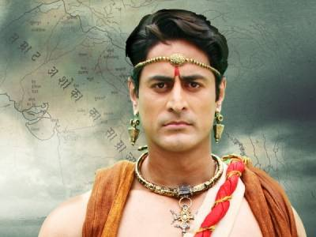

Cras sit amet nibh libero, in gravida nulla. Nulla vel metus scelerisque ante sollicitudin. Cras purus odio, vestibulum in vulputate at, tempus viverra turpis. Fusce condimentum nunc ac nisi vulputate fringilla. Donec lacinia congue felis in faucibus.Fusce condimentum nunc ac nisi vulputate fringilla. Donec lacinia congue felis in faucibus.Fusce condimentum nunc ac nisi vulputate fringilla. Donec lacinia congue felis in faucibus.
Soo mean
Cras sit amet nibh libero, in gravida nulla. Nulla vel metus scelerisque ante sollicitudin. Cras purus odio, vestibulum in vulputate at, tempus viverra turpis. Fusce condimentum nunc ac nisi vulputate fringilla. Donec lacinia congue felis in faucibus.Fusce condimentum nunc ac nisi vulputate fringilla. Donec lacinia congue felis in faucibus.Fusce condimentum nunc ac nisi vulputate fringilla. Donec lacinia congue felis in faucibus.

Ashok Samrat
Emperor Ashoka struggles since his early days as Bindusara's son till his reign as a ruthless emperor, before he finally embraces Buddhism after the bloodshed in Kalinga.felis in faucibus.Fusce condimentum nunc ac nisi vulputate fringilla. Donec lacinia congue felis in faucibus.Fusce condimentum nunc ac nisi vulputate fringilla. Donec lacinia congue felis in faucibus.
Today's Headlines:
Peter Salisbury says some are profiting from prolonging the conflict
Edward Burke on how to avoid a return to the Troubles
Peter Salisbury says some are profiting from prolonging the conflict
Edward Burke on how to avoid a return to the Troubles
Peter Salisbury says some are profiting from prolonging the conflict
Edward Burke on how to avoid a return to the Troubles
Peter Salisbury says some are profiting from prolonging the conflict
Edward Burke on how to avoid a return to the Troubles
Peter Salisbury says some are profiting from prolonging the conflict
Edward Burke on how to avoid a return to the Troubles
Peter Salisbury says some are profiting from prolonging the conflict
It is certainly agni pariksha for all of us — our party, the BJP and foreign country. Congress will fight very hard to retain Karnataka, the BJP wants to make India itself Congress-mukt.
Our party, however, has been out of power for 10 years and this election is a fight for survival and personally, a test of my leadership. At the lowest ebb of my popularity, in 2008, we won 28 seats.
Our party, however, has been out of power for 10 years and this election is a fight for survival .
Nearly 87 lakh farmers in Uttar Pradesh will see their loans pared to the extent of Rs 1 lakh each by the end of this month, as per a deadline fixed by the Yogi Adityanath government to pay off banks and meet the BJP's Rs 36,000 cr loan waiver promise.
Governor Ram Naik on Saturday approved a proposal to release the funds.
Our party, however, has been out of power for 10 years and this election is a fight for survival.